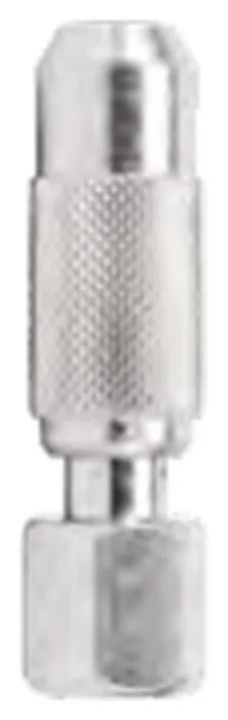

GROZ · Oiling Equipment
Oil Control Gun Accessories
CAT NR NDN/26/1-4F/N · ORD NR 45034
| CAT NR (catalogue number) | NDN/26/1-4F/N |
|---|---|
| ORD NR (order number) | 45034 |
| Box quantity | 25 |
| Inlet threads | 1/4" NPT (F) |
| Tip dia. (inch) | 19/32 |
| Tip dia. (mm) | 15 |
Ask for a quote The catalogue PDF, page 175
“Ask for a quote” opens this product in the catalogue: add it to your quote and send it. Buyers from Africa, the Gulf and worldwide are welcome; prices in USD, EUR or INR.
From the GROZ Fluid Handling CC-07 catalogue. Not yet verified: these details were read from the printed catalogue automatically; check the catalogue page before ordering.